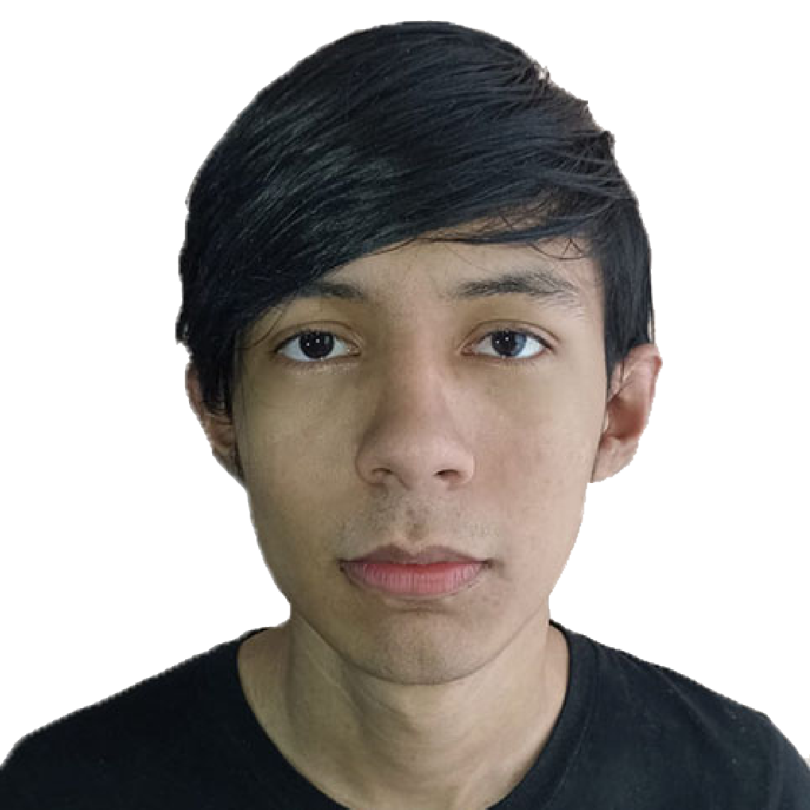

Armando Carrillo Rincón
Perfil
Estudiante de la carrera "Tecnologías De Información En Las Organizaciones" con proyectos individuales de videojuegos. Mi objetivo es dedicarme como programador en alguna empresa de desarrollo de modificaciones en el ambito del entretenimiento como lo es Twich o YouTube ó Dedicarme en alguna empresa de Marketing Digital o desarrollo del mismo
Datos Generales
Teléfono: 271-179-3835
Contacto: ArmandoMCU210@outlook.com
Lugar: México - Veracruz
Idiomas: Español
Aptitudes & Habilidades
Trabajar bajo presión
Creatividad
Trabajo en equipo
Liderazgo
Analizó y ejecuto indicaciones
Hanilidades Físicas
Edición de Video e Imagen
Conocimiento de Paqueteria de Microsoft
Pasatiempos
Tocar guitarra
Editor de Videos o Fotomontajes
Escuchar musica
Creador de contenido digital
Experiencia Laboral
Desarrollador Digital - Córdoba, Veracruz | 2018 - 2020
Empresa: EarthLan Craft Studios
Creador de modificaiones para el videojuego "Minecraft"
Diseñador de Background y Publicidad
Editor de video
Administrador de las redes sociales
Adminitrador y Creador de Contenido - Córdoba, Veracruz | 2021 - Actualmente
Empresa: Real Legends Club
Administrador y Organizador
Creacion de contenido digital (Tik Tok)
Editor de video
Dineñador de Banners y Presentaciónes
Formación Academica
Preparatoria: BAO "Bachilleres de Artes y Oficios Mixta" | Ciclo 2019 - 2021
Secundaria: Escuela Secundaria Tecnica Industrial No°70 | Ciclo 2016 - 2018